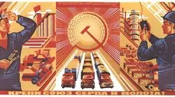
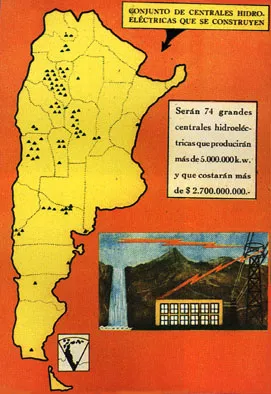
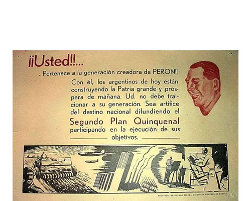
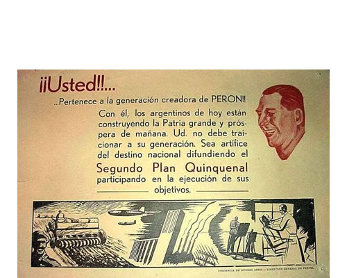

primer plan quinquenal
El primer plan quinquenal fue establecido en 1946 por Juan Domingo Perón, con el objetivo de transformar el modelo económico agroexportador en uno centrado en la industrialización. Este cambio buscaba proyectar una nueva forma de organización estatal que fomentara una mayor explotación industrial, lo que a su vez provocó un aumento en la inmigración interna de trabajadores. Este fenómeno dio origen a un movimiento obrero conocido como "los trabajadores nuevos".
Una de las razones principales del movimiento fue el plan económico, que consistía en un programa de cinco años de inversión y obras destinado a asegurar el suministro adecuado de materias primas, combustibles y equipos mecánicos. Su objetivo era desarrollar la industria y la agricultura a través de la industrialización por sustitución de importaciones.
Entre las decisiones más importantes se incluyó la implementación de impuestos a productos importados que competían con los nacionales, así como la creación de créditos para las industrias, con aranceles bajos. El plan se centraba en la reactivación de la economía nacional, generando empleo e incrementando la presencia del Estado en áreas como salud, servicios públicos, educación y seguridad social. También se llevaron a cabo obras significativas, como la creación del Banco Central, encargado de proporcionar fondos a las industrias para el desarrollo de actividades económicas de interés nacional.
 
segundo plan quinquenal
Argentina estaba concluyendo un período de estabilidad económica logrado gracias al modelo de Industrialización por Sustitución de Importaciones (ISI) del primer plan quinquenal. El país modificó su modelo exclusivamente agroexportador para combinarlo con una economía de base industrial.
Sin embargo, en 1951 surgieron desafíos significativos, como una grave sequía que duró dos años y un fenómeno inflacionario. El segundo plan quinquenal se diseñó como respuesta a estos desafíos, con una programación que se extendía hasta 1957, pero fue interrumpido por un golpe de estado en 1955, autodenominado "Revolución Libertadora".
El principal objetivo de este plan era restaurar la economía argentina, poniendo un fuerte énfasis en la producción agrícola, la inversión extranjera, la promoción de la industria pesada y el autoabastecimiento de combustible. Para combatir la inflación, se implementaron varias medidas, como la eliminación de subsidios a bienes de uso popular y el levantamiento del congelamiento de los alquileres.
Durante este período, una gran parte de las importaciones correspondía al petróleo, ya que Argentina carecía de la maquinaria necesaria para extraer este recurso. Por ello, se tomó la decisión de promulgar la Ley 14.222 de inversión extranjera, que contradecía el artículo 40 de la Constitución Nacional, que afirmaba que todos los recursos del suelo eran argentinos. A pesar de esto, el Estado comenzó a contratar los servicios de empresas extranjeras, firmando un contrato con la Standard Oil para la explotación de 40,000 hectáreas en Santa Cruz, lo que generó una intensa controversia política, pero permitió satisfacer las necesidades del país en materia de combustible.
Las decisiones tomadas durante el segundo plan quinquenal produjeron resultados positivos en términos de:
Desaceleración de la inflación, que pasó del 30% al 4% en 1954. Aumento de las exportaciones y del producto bruto interno. No obstante, diversos factores llevaron a Argentina a un periodo de crisis, entre ellos: Balanza de pagos negativa. Caída del salario. Divisiones internas dentro del partido peronista. Aspectos resaltantes: Se modernizó el sector agropecuario para aumentar la producción y la productividad. El plan también promovió el desarrollo industrial, impulsando sectores como: Automotriz. Petrolero. Petroquímico. Químico. Metalúrgico. Maquinaria eléctrica y no eléctrica. Resumen: El segundo plan quinquenal en Argentina, que se llevó a cabo entre 1958 y 1962, fue un intento del gobierno por mejorar la economía del país, buscando un crecimiento industrial y modernización. Sin embargo, enfrentó problemas como la oposición de algunos sindicatos y la falta de apoyo político, lo que generó tensiones sociales y llevó a la caída del gobierno. A pesar de esto, el segundo plan quinquenal sentó bases importantes para la industria argentina en el futuro.
 
